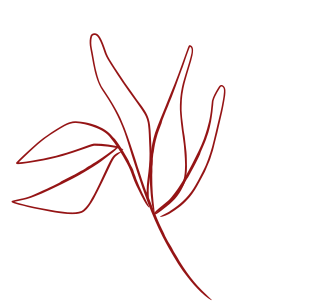
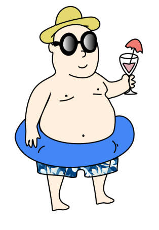
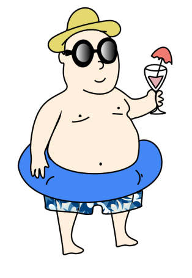
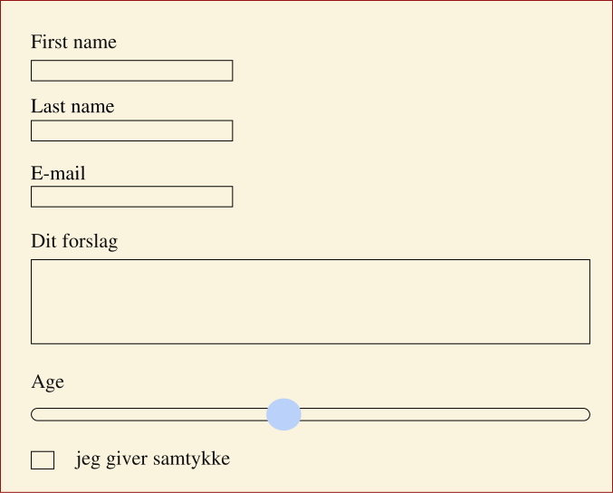
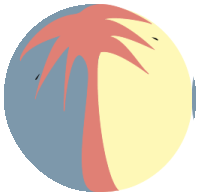

I dette projekt har jeg arbejdet med et Emergency Site, hvor grundkoden og en style guide var udleveret. Sitet fungerede som en slags sandkasse, hvor målet var at lære forskellige teknologier inden for webdesign. Jeg valgte selv en nødsituation og færdiggjorde de dele af sitet, som ikke var kodet færdigt, gennem både visuelle løsninger og kode i CSS og JavaScript. Sitet består af tre sider, og over fire uger har jeg designet og implementeret en interaktiv infografik og logo, udviklet og stylet en webformular, kodet en forside samt implementeret dark mode og popups.
TEMA 4
Løsning
Process
UGE 1 - infrografik
I dette tema valgte jeg at lave mit Emergency Site om en dårlig strandferie med dårligt vejr. Jeg begyndte med at lave et moodboard som gav mig inspiration til, hvordan min infografik skulle se ud. Infografikken skulle forestille en person, der var klar til strand og sol med en øl eller drink i hånden. Jeg startede med at skitsere personen og tegnede den derefter færdig i Adobe Illustrator
Efter infografikken var færdig i Illustrator, arbejdede vi videre med JavaScript. Min idé var, at når man trykkede på en knap, skulle enten hatten, drinken eller baderingen blive større og/eller skifte farve. Samtidig ville jeg vise tekst på siden, der forklarede hvert element og koblede det til sitets tema om dårligt vejr.
 

UGE 2 - webformular
I uge 2 arbejdede vi med webformularer og udviklede en formularside, som blev integreret i Emergency-sitet. Min formular indeholdt flere inputfelter, hvor brugeren kunne indtaste personlige oplysninger, angive alder, give samtykke og indsende et forslag. Formularen blev stylet med CSS med fokus på tydelighed og overskuelighed, og jeg arbejdede med obligatoriske felter for at sikre korrekt udfyldelse.

UGE 3 - forsinden
I uge 3 arbejdede vi i Adobe Illustrator med at designe et logo. Jeg valgte at lade logoet passe til strandtemaet og designede derfor en palme inde i en rund cirkel. Samtidig arbejdede vi videre med forsiden, hvor jeg udviklede popups og brugte AI til at generere billeder og tekst. Her lærte jeg også om CSS-transitions og styling af popups, og jeg valgte at gøre baggrunden bag popupsen let sløret samt at lade overgangen væk fra popupsen ske langsommere for en mere glidende effekt.

UGE 4 - Dark mode
I den sidste uge af temaet arbejdede vi med at style og implementere et dark mode på sitet. Når brugeren trykkede på en toggle-knap, skulle hele sitet skifte til dark mode, hvor vi selv valgte farverne. Det skulle også være muligt at skifte tilbage til lys tilstand. Dette blev implementeret ved hjælp af CSS og JavaScript.
Læring
Gennem arbejdet med Emergency-sitet har jeg lært at omsætte tema og visuelle idéer til konkrete designbeslutninger, herunder logo, infografik og formularer, og implementere dem på sitet. Jeg har også lært at gøre elementer interaktive med JavaScript, arbejde med CSS-transitions, popups og dark mode samt implementere responsivt design. Projektet har givet mig en bedre forståelse af, hvordan design, interaktivitet og funktionalitet hænger sammen og påvirker brugeroplevelsen.